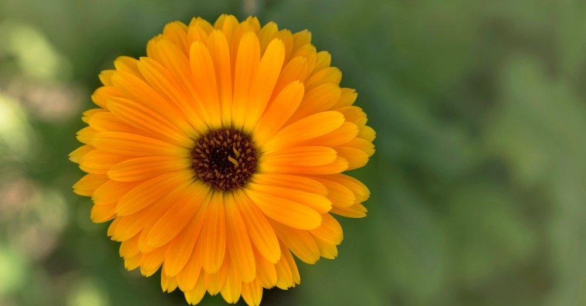

Echeveria Perle-Von
Es una suculenta hermosa con tonos morados y rosas.
Aprende a Cuidarla
Ver más
Caléndula
La flor que se utiliza para hacer medicina. La caléndula es comúnmente usada para tratar las heridas, infecciones, etc.

Ver más
Humus de lombriz
Es uno de los abonos orgánicos estrella en la actualidad. Aprende más sobre este abono.
Ver más
Biznagas en Peligro de extinción
Enterate porque el acitrón coloca en peligro de extinción a un cacto mexicano.
Ver más
Cómo hacer esquejes en agua
El esquejado en agua es una de las técnicas que más se utilizan
Ver más
Stapelia: cuidados
Una planta muy particular que cualquier fan Stranger Things reconocerá.
Aprende a Cuidarla
Ver más
Cómo plantar calabacines
Aprende a cultivar estos frutos excepcionalmente sanos, sabrosos.
Ver más
Transplantes: Hortensias
Estas plantas se caracterizan por su espectacular belleza de tonos de colores diferentes
Ver más